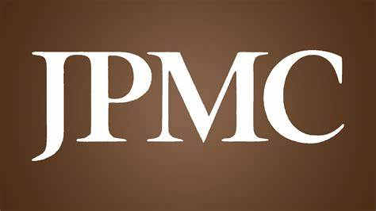
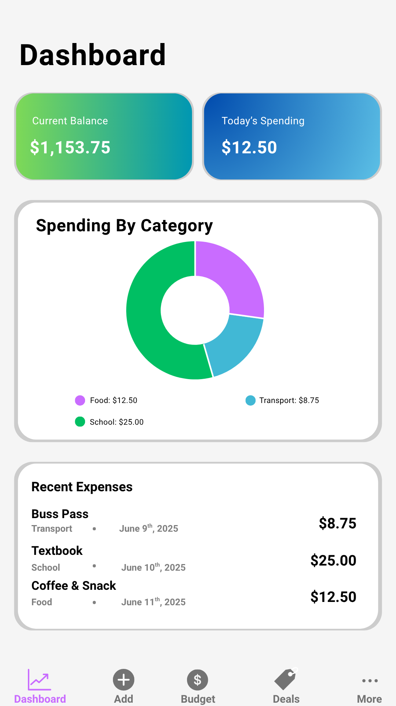

April 2025
Data for Good Hackathon – JP Morgan Chase, Plano, TX View Project
I participated in the 2-day JP Morgan Data for Good Hackathon, where my team worked with a dataset from Concilio, a non-profit focused on helping Latino parents become more involved in their children's education. We developed a K-Means clustering model to analyze and categorize parents based on factors such as age, insurance status, and household size. We integrated the model into a web app, enabling Concilio to visualize and allocate resources more effectively for improved engagement with families.

June - July 2025
Arise and Shine Foundation Inc. x Apple SwiftUI Bootcamp
Technical Lead | Mobile App Development
Participated in a two-week intensive SwiftUI bootcamp organized by the Arise and Shine Foundation and sponsored by Apple. As technical lead, I collaborated with a team to design and develop Nestly, a mobile app prototype built to help college students take control of their finances. The app features an expense tracker, budget planner, student deals section, and an investment literacy hub, empowering users to reduce financial stress, make smarter spending decisions, and build a foundation for long-term financial independence and generational wealth.
We presented Nestly at the final summit, where our team earned a perfect score (100%) and placed Top 3 for best project—recognized for innovation, UI/UX, and presentation quality.
View Project

